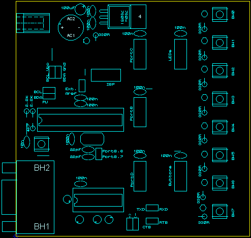

You can see 6 bridges in this image (from left to right): One next to the reset pull-up resistor (4K7), one below the reset button, one is above the TWI connector, one next to the Aref connector, and one each next to the PortB/Button decoupling cap.
The LEDs have their cathode either facing towards the top (the user LEDs) or towards the power connector (power LED). For electrolytic caps the polarity is shown (+).